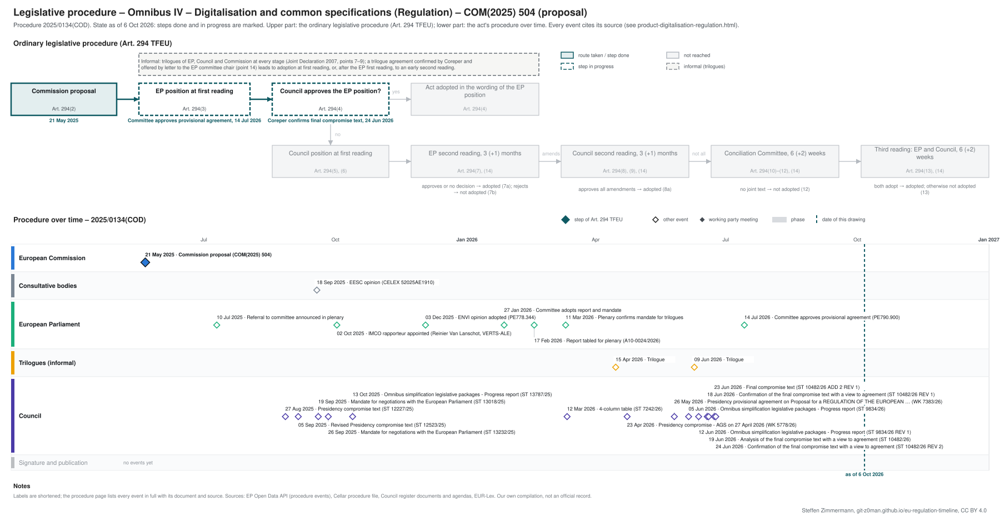

← Regulation timeline › Omnibus IV › Legislative procedure · All procedures
Omnibus IV – Digitalisation and common specifications (Regulation) – COM(2025) 504 (proposal)
Procedure 2025/0134(COD), ongoing, as of 6 Oct 2026. Drawing: SVG · PNG · PDF (A3) · draw.io · Page as Markdown: product-digitalisation-regulation.md


| Stage | Provisional agreement (last trilogue 9 Jun 2026) |
|---|---|
| Parliament | mandate 11 Mar 2026 |
| Council | mandate (ST 13232/25 of 26 Sep 2025) |
| Latest activity | 14 Jul 2026 · European Parliament: Committee approves provisional agreement (PE790.900) |
| Next steps | 23 Nov 2026: Indicative plenary sitting date, 1st reading (EP forecast); EP plenary vote on the agreed text (Art. 294(3) TFEU), then Council adoption (Art. 294(4) TFEU), with legal-linguistic revision before or after the vote |

European Parliament committees
| Committee | Role | Rapporteur | Shadow rapporteurs |
|---|---|---|---|
| IMCO Internal Market and Consumer Protection | Responsible | Reinier Van Lanschot (Greens/EFA), appointed 2 Oct 2025 | Andreas Schwab (EPP), Christel Schaldemose (S&D), Virginie Joron (PfE), Denis Nesci (ECR), Anna-Maja Henriksson (Renew) |
| ENVI Environment, Climate and Food Safety | Opinion | Raúl De La Hoz Quintano (EPP), appointed 13 Oct 2025 | Tiemo Wölken (S&D), Stefano Cavedagna (ECR), Ana Vasconcelos (Renew), Valentina Palmisano (The Left) |
Source: EP Open Data API (participations) and the Legislative Observatory (joint committee, opinions declined); names link to each Member's page on the EP website. The API names no committee for shadow rapporteurs; they are assigned by the EP's order of participants, which groups each committee.
Events
| Date | Actor | Event | Document | Source |
|---|---|---|---|---|
| 21 May 2025 | European Commission | Commission proposal (Art. 294(2) TFEU) | COM(2025) 504 · en.md de.md | Cellar (CELEX 52025PC0504) |
| 10 Jul 2025 | European Parliament | Referral to committee announced in plenary | EP procedure file | EP Open Data API, procedure 2025-0134 (referral) |
| 27 Aug 2025 | Council | Presidency compromise text | ST 12227/25 · en.md | Cellar procedure file 2025/134 (Council register) |
| 5 Sep 2025 | Council | Revised Presidency compromise text | ST 12523/25 · en.md | Cellar procedure file 2025/134 (Council register) |
| 18 Sep 2025 | Consultative bodies | EESC opinion | CELEX 52025AE1910 | Cellar procedure file 2025/134 |
| 19 Sep 2025 | Council | Mandate for negotiations with the European Parliament | ST 13018/25 · en.md | Cellar procedure file 2025/134 (Council register) |
| 26 Sep 2025 | Council | Mandate for negotiations with the European Parliament | ST 13232/25 · en.md | Parliament of Austria, EU database (interinstitutional file 2025/0134(COD)) |
| 2 Oct 2025 | European Parliament | IMCO rapporteur appointed (Reinier Van Lanschot, VERTS-ALE) | EP procedure file | EP Open Data API, procedure 2025-0134 (participation RAPPORTEUR) |
| 13 Oct 2025 | Council | Omnibus simplification legislative packages - Progress report | ST 13787/25 · en.md de.md | Cellar procedure file 2025/134 (Council register) |
| 3 Dec 2025 | European Parliament | ENVI opinion adopted | PE778.344 | EP Open Data API, procedure 2025-0134 (committee adopting opinion) |
| 27 Jan 2026 | European Parliament | Committee adopts report and mandate | EP procedure file | EP Open Data API, procedure 2025-0134 (committee adopting report) |
| 17 Feb 2026 | European Parliament | Report tabled for plenary | A10-0024/2026 · en.md de.md | EP Open Data API, procedure 2025-0134 (tabling plenary) |
| 11 Mar 2026 | European Parliament | Plenary confirms mandate for trilogues | EP procedure file | EP Open Data API, procedure 2025-0134 (plenary endorse committee interinstitutional negotiations) |
| 12 Mar 2026 | Council | 4-column table | ST 7242/26 · en.md | Cellar procedure file 2025/134 (Council register) |
| 15 Apr 2026 | Trilogues (informal) | Trilogue | EP procedure file | EP Open Data API, procedure 2025-0134 (interinstitutional negotiation) |
| 23 Apr 2026 | Council | Presidency compromise - AGS on 27 April 2026 | WK 5778/26 · en.md | Cellar procedure file 2025/134 (Council register) |
| 26 May 2026 | Council | Presidency provisional agreement on Proposal for a REGULATION OF THE EUROPEAN PARLIAMENT … | WK 7383/26 · en.md | Cellar procedure file 2025/134 (Council register) |
| 5 Jun 2026 | Council | Omnibus simplification legislative packages - Progress report | ST 9834/26 · en.md | Cellar procedure file 2025/134 (Council register) |
| 9 Jun 2026 | Trilogues (informal) | Trilogue | EP procedure file | EP Open Data API, procedure 2025-0134 (interinstitutional negotiation) |
| 12 Jun 2026 | Council | Omnibus simplification legislative packages - Progress report | ST 9834/26 REV 1 · en.md de.md | Cellar procedure file 2025/134 (Council register) |
| 18 Jun 2026 | Council | Confirmation of the final compromise text with a view to agreement | ST 10482/26 REV 1 · en.md | Council register document ST 10482/26 REV 1 (interinstitutional files 2025/0130(COD), 2025/0131(COD), 2025/0133(COD), 2025/0134(COD)); Cellar links it to procedure 2025/0133(COD) only |
| 19 Jun 2026 | Council | Analysis of the final compromise text with a view to agreement | ST 10482/26 · en.md | Council register document ST 10482/26 (interinstitutional files 2025/0130(COD), 2025/0131(COD), 2025/0133(COD), 2025/0134(COD)); Cellar links it to procedure 2025/0133(COD) only |
| 23 Jun 2026 | Council | Final compromise text | ST 10482/26 ADD 2 REV 1 · en.md | Parliament of Austria, EU database (interinstitutional file 2025/0134(COD)) |
| 24 Jun 2026 | Council | Confirmation of the final compromise text with a view to agreement | ST 10482/26 REV 2 · en.md | Council register document ST 10482/26 REV 2 (interinstitutional files 2025/0130(COD), 2025/0131(COD), 2025/0133(COD), 2025/0134(COD)); Cellar links it to procedure 2025/0133(COD) only |
| 14 Jul 2026 | European Parliament | Committee approves provisional agreement | PE790.900 · en.md | EP Open Data API, procedure 2025-0134 (committee approve provisional agreement) |
Documents
Every document the Council register, the EU database of the Parliament of Austria or the EP lists for the procedure, with its state: public documents link to the official file; documents that are not public link to their entry in the Austrian database where there is one (metadata only). Status: public; not public; not public, leak available (an unofficial copy is known to circulate outside the institutions; it is neither published nor quoted here). Released: when a document listed as not public was released, by the date of the Council's public PDF (a technical date) or else the day our daily check found it public.
| Date | Document | Kind | Subject | Status | Released | Text |
|---|---|---|---|---|---|---|
| 26 May 2025 | ST 9276/25 ADD 1 | Council: transmission note | Commission staff working document on small mid-cap companies Accompanying the documents Proposal for a Directive of the European Parliament and of the Council … | public | – | – |
| 26 May 2025 | ST 9318/25 | Council: transmission note | Proposal for a Regulation of the European Parliament and of the Council amending Regulations (EU) No 765/2008, (EU) 2016/424, (EU) 2016/425, (EU) 2016/426, … | public | – | – |
| 26 May 2025 | ST 9318/25 ADD 1 | Council: transmission note | Annexes to the Proposal for a Regulation of the European Parliament and of the Council amending Regulations (EU) No 76512008, (EU) 2016/424, (EU) 2016/425, … | public | – | – |
| 26 May 2025 | ST 9327/25 ADD 2 | Council: transmission note | Commission staff working document Accompanying the documents Proposal for a Directive of the European Parliament and of the Council amending Directives … | public | – | – |
| 27 May 2025 | ST 9276/25 REV 1 | Council: transmission note | Proposal for a Regulation of the European Parliament and of the Council amending Regulations (EU) 2016/679, (EU) 2016/1036, (EU) 2016/1037, (EU) 2017/1129, … | public | – | – |
| 28 May 2025 | WK 7090/25 | Council note | Simplification package on digitalisation and common specifications | not public* | – | – |
| 6 Jun 2025 | WK 7556/25 | Council note | Simplification on digitalisation and common specifications - Commission presentation | public | – | – |
| 16 Jun 2025 | WK 7985/25 | Council note | Digitalisation and Common Specifications - Commission presentation | public | – | – |
| 16 Jun 2025 | WK 8008/25 | Council note | Compilation of written comments | public | – | – |
| 17 Jun 2025 | WK 8008/25 ADD 1 | Council note | Compilation of written comments | public | – | – |
| 20 Jun 2025 | WK 7985/25 REV 1 | Council note | Digitalisation and Common Specifications - Commission presentation | public | – | – |
| 2 Jul 2025 | WK 9207/25 | Council note | Work programme and priorities of the Danish Presidency - Presentation | public | – | – |
| 9 Jul 2025 | WK 9571/25 | Council note | Digitalisation and common specifications – Presidency discussion note | public | – | – |
| 14 Jul 2025 | ST 11580/25 | Council note | AOB for the meeting of the General Affairs Council on 18 July - Handling of the simplification agenda during the Danish Presidency - Explanatory note | public | – | – |
| 27 Aug 2025 | ST 12227/25 | Council: Presidency compromise text | Presidency compromise text | public | – | en |
| 5 Sep 2025 | ST 12523/25 | Council: Presidency compromise text | Revised Presidency compromise text | public | – | en |
| 9 Sep 2025 | WK 11239/25 | Council note | Digitalisation & common specifications + SMC - MS compiled comments | public | – | – |
| 18 Sep 2025 | CELEX 52025AE1910 | Opinion | Opinion of the European Economic and Social Committee a) Proposal for a Regulation of the European Parliament and of the Council amending Regulations (EU) … | public | – | – |
| 19 Sep 2025 | ST 13018/25 | Council position (mandate) | Mandate for negotiations with the European Parliament | public | – | en |
| 26 Sep 2025 | ST 13232/25 | Council position (mandate) | Mandate for negotiations with the European Parliament | public | – | en |
| 8 Oct 2025 | ST 13412/25 | Council note | Cover note from the Italian Chamber of Deputies | not public* | – | – |
| 8 Oct 2025 | ST 13603/25 | Council note | Cover note from the Spanish parliament (Cortes Generales) | not public* | – | – |
| 13 Oct 2025 | ST 13787/25 | Council: progress report | Omnibus simplification legislative packages - Progress report | public | – | en de |
| 24 Oct 2025 | PE779.374 | EP amendments | public status unknown | – | – | |
| 4 Dec 2025 | ST 16131/25 REV 1 | Council note | Simplification a) 2025 Annual Overview Report b) Annual Progress Reports - Presentation by the Commission - Exchange of views | public | – | – |
| 16 Dec 2025 | PE778.344 | EP opinion | Opinion on the proposal for a regulation of the European Parliament and of the Council amending Regulations (EU) No 765/2008, (EU) 2016/424, (EU) 2016/425, … | public | – | – |
| 9 Jan 2026 | WK 252/26 | Council note | Priorities and work programme of the Cyprus Presidency - Presentation by the Presidency (AGS on 9 January 2026) | public | – | – |
| 17 Feb 2026 | A10-0024/2026 | EP committee report | Report on the proposal for a regulation of the European Parliament and of the Council amending Regulations (EU) No 765/2008, (EU) 2016/424, (EU) 2016/425, (EU) … Our summary: Report of the European Parliament's Committee on the Internal Market and Consumer Protection (IMCO) on the Omnibus IV Regulation on digitalisation and common specifications (COM(2025) 504), adopted in committee on 27 January 2026 and tabled for plenary on 17 February 2026, with the Environment committee's opinion annexed; it is the committee's position, not Parliament's and not law. Its 85 amendments tie the Commission's new power to adopt common specifications for cableways, personal protective equipment and gas appliances to a failed standardisation request, add a last-resort route for an urgent concern (internal market emergency mode, or suspended cooperation with international standardisation organisations with prior Council authorisation) that lasts only until the revised Regulation (EU) No 1025/2012 enters into force, move adoption to the examination procedure and let the Parliament object to common specifications, also under the Machinery, Batteries and Toy Safety Regulations. On digitalisation the EU declaration of conformity must be directly accessible, the digital contact freely accessible, and consumers may ask for paper instructions up to 24 months after purchase (professional users 6 months), sent within 15 working days; no term of the tracked concepts appears in it. | public | – | en de |
| 27 Feb 2026 | WK 3329/26 | Council note | Digitalisation and common specifications: Follow-up to the AGS of 18 February 2026 – Questionnaire | not public* | – | – |
| 12 Mar 2026 | ST 7242/26 | Trilogue document | 4-column table | public | – | en |
| 27 Mar 2026 | WK 4718/26 | Council note | Digitalisation and common specifications | public | – | – |
| 10 Apr 2026 | WK 5088/26 | Council note | Compilation of Member States comments | public | – | – |
| 23 Apr 2026 | WK 5778/26 | Council: Presidency compromise text | Presidency compromise - AGS on 27 April 2026 Our summary: Presidency note of 23 April 2026 to the Antici Group (Simplification), one joint document on both Omnibus IV proposals (this Regulation and the parallel Directive), offering compromises with the European Parliament on two open issues; a draft for discussion, not the Council's position and not law. On common specifications it proposes a narrowly framed last-resort power: where no harmonised standard exists or is expected, and to address the exceptional situation in which a lack of cooperation with international standardisation organisations prevents the European standardisation organisations from developing one, the Commission could adopt common specifications only after the Council has authorised it by implementing act, with a no-opinion clause in the committee and a time limit tied to the revision of Regulation (EU) No 1025/2012; in return the Council keeps its extension of the ecodesign transition and the deletion of the amendments to the Accreditation Regulation. On paper instructions it proposes one term, 'user', without the Parliament's split between consumers and professionals, a 24-month period to ask for paper instructions, and leaves open whether the reply is due within one month or 15 working days. | public | – | en |
| 18 May 2026 | WK 6894/26 | Council note | Information from the Presidency on the state of play of negotiations (Digitalisation and Common Specifications, and Small Mid-Caps) | not public* | – | – |
| 26 May 2026 | WK 7383/26 | Provisional agreement | Presidency provisional agreement on Proposal for a Regulation of the European Parliament and of the Council amending Regulations (EU) No 765/2008, (EU) … | public | – | en |
| 28 May 2026 | WK 7631/26 | Trilogue document | Draft proposal for a Directive amending Directives 2000/14/EC 2011/65/EU, 2013/53/EU, 2014/29/EU, 20141301EU, 2014/31/EU, 2014/32/EU, 2014/33/EU, 2014/34/EU, … | not public* | – | – |
| 29 May 2026 | ST 9863/26 | Council note | Preparation for the trilogue | public | – | – |
| 5 Jun 2026 | ST 9834/26 | Council: progress report | Omnibus simplification legislative packages - Progress report | public | – | en |
| 12 Jun 2026 | ST 9834/26 REV 1 | Council: progress report | Omnibus simplification legislative packages - Progress report Our summary: Revised progress report of the Council's General Secretariat of 12 June 2026 on all pending omnibus simplification packages, for Coreper and the General Affairs Council of 16 June 2026; it records the state of work and is not a Council position. On Omnibus IV, which includes this Regulation on digitalisation and common specifications, it recalls the Coreper mandates of 24 September 2025, the Parliament's vote of 11 March 2026 and the first trilogue on 15 April 2026, and refers to revised mandates of 3 June 2026. Against the first version of 5 June it adds that the trilogue negotiations on the remaining Omnibus IV proposals were concluded with provisional agreements, to be put to Coreper for endorsement on 24 June 2026; it names no content of the agreement. | public | – | en de |
| 18 Jun 2026 | ST 10482/26 ADD 1 | Provisional agreement | Final compromise text | public | – | en |
| 18 Jun 2026 | ST 10482/26 ADD 2 | Provisional agreement | Final compromise text | public | – | en |
| 18 Jun 2026 | ST 10482/26 ADD 3 | Provisional agreement | Final compromise text | public | – | en |
| 18 Jun 2026 | ST 10482/26 ADD 4 | Provisional agreement | Final compromise text | public | – | en |
| 18 Jun 2026 | ST 10482/26 ADD 5 | Provisional agreement | Draft Council statement | public | – | en |
| 18 Jun 2026 | ST 10482/26 REV 1 | Provisional agreement | Confirmation of the final compromise text with a view to agreement | public | – | en |
| 19 Jun 2026 | ST 10482/26 | Provisional agreement | Analysis of the final compromise text with a view to agreement | public | – | en |
| 23 Jun 2026 | ST 10482/26 ADD 2 REV 1 | Provisional agreement | Final compromise text | public | – | en |
| 24 Jun 2026 | ST 10482/26 ADD 1 REV 1 | Provisional agreement | Final compromise text | not public* | – | – |
| 24 Jun 2026 | ST 10482/26 REV 2 | Council: confirmation of the final compromise text | Confirmation of the final compromise text with a view to agreement | public | – | en |
| 26 Jun 2026 | PE790.900 | Provisional agreement | Provisional agreement resulting from interinstitutional negotiations Proposal for a regulation of the European Parliament and of the Council amending … Our summary: Provisional agreement on the Omnibus IV Regulation on digitalisation and common specifications (COM(2025) 504), as the European Parliament's IMCO committee received it on 26 June 2026 for a single vote; an agreed text, not law, which still needs the plenary vote, the Council's adoption and legal-linguistic revision. Its wording is that of the Council's final compromise text ST 10482/26 ADD 1, except that one amendment to the conformity assessment annex of the Gas Appliances Regulation is missing. Compared with the Commission proposal it no longer amends Regulation (EC) No 765/2008, gives the Commission a last-resort power, limited to 48 months, to adopt common specifications without a prior standardisation request for cableways, personal protective equipment and gas appliances only, and moves the digital EU declaration of conformity and the other digital duties for machinery from 20 January 2027 to 30 months after entry into force. No term of the tracked concepts appears in it. | public | – | en |
| 26 Jun 2026 | ST 10980/26 | Council note | Offer letter to the European Parliament | public | – | – |
* Not public: the registers are checked again daily until the document is released; last check 15 Oct 2026.
Texts as Markdown
Unofficial Markdown conversions for reading, searching and project folders; only the official document is authentic. "Read" opens the rendered text on GitHub, where a link to a provision (#art-13, #rec-12, #annex-i) jumps to it.
| Date | Stage | Document | Markdown | Read |
|---|---|---|---|---|
| 21 May 2025 | Commission proposal | CELEX 52025PC0504 | en de | GitHub |
| 27 Aug 2025 | Council: Presidency compromise text | ST 12227/25 | en | GitHub |
| 5 Sep 2025 | Council: Presidency compromise text | ST 12523/25 | en | GitHub |
| 19 Sep 2025 | Council position (mandate) | ST 13018/25 | en | GitHub |
| 26 Sep 2025 | Council position (mandate) | ST 13232/25 | en | GitHub |
| 13 Oct 2025 | Council: progress report | ST 13787/25 | en de | GitHub |
| 17 Feb 2026 | EP committee report | A10-0024/2026 | en de | GitHub |
| 12 Mar 2026 | Trilogue document | ST 7242/26 | en | GitHub |
| 23 Apr 2026 | Council: Presidency compromise text | WK 5778/26 | en | GitHub |
| 26 May 2026 | Provisional agreement | WK 7383/26 | en | GitHub |
| 5 Jun 2026 | Council: progress report | ST 9834/26 | en | GitHub |
| 12 Jun 2026 | Council: progress report | ST 9834/26 REV 1 | en de | GitHub |
| 18 Jun 2026 | Provisional agreement | ST 10482/26 ADD 1 | en | GitHub |
| 18 Jun 2026 | Provisional agreement | ST 10482/26 ADD 2 | en | GitHub |
| 18 Jun 2026 | Provisional agreement | ST 10482/26 ADD 3 | en | GitHub |
| 18 Jun 2026 | Provisional agreement | ST 10482/26 ADD 4 | en | GitHub |
| 18 Jun 2026 | Provisional agreement | ST 10482/26 ADD 5 | en | GitHub |
| 18 Jun 2026 | Provisional agreement | ST 10482/26 REV 1 | en | GitHub |
| 19 Jun 2026 | Provisional agreement | ST 10482/26 | en | GitHub |
| 23 Jun 2026 | Provisional agreement | ST 10482/26 ADD 2 REV 1 | en | GitHub |
| 24 Jun 2026 | Council: confirmation of the final compromise text | ST 10482/26 REV 2 | en | GitHub |
| 26 Jun 2026 | Provisional agreement | PE790.900 | en | GitHub |